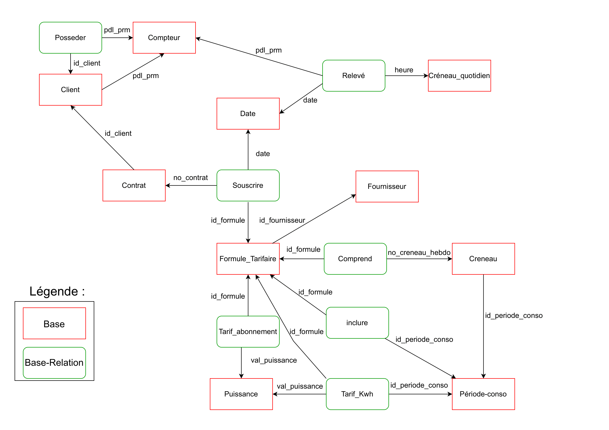
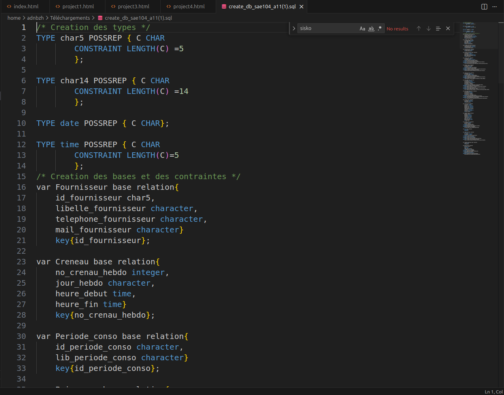

À propos du Projet
Ce projet de base de données avait pour but de concevoir et implémenter une solution pour gérer les données de fromules d'abonnements à des compteurs électriques.
J'ai du utiliser mes compétences et notions théorique d'UML et du language de requête TutorialD
Réalisations
- Concevoir une architecture de base de données relationnelle
- Peupler la base de données
- Réaliser des graphes des contraintes d'intégrité réferentiel
Technologies Utilisées
TutorialD
Langage de requête pour les bases de données relationnelles
Draw.io
Dessin et conception de diagrammes référentiels
REL
logiciel de gestion de bases de données
Résultats et Apprentissages
100%
Fonctionnalités Implémentées
9.0/10
Intégrité de la table
8/10
Traduction de la base de données
Ce que j'ai appris
Ce projet m'a permis de maîtriser les concepts de base de données relationnelles et d'appliquer les principes d'intégrité référentielle tout en concrétisant les notions théoriques de cours à un cas réel.
Galerie du Projet


×